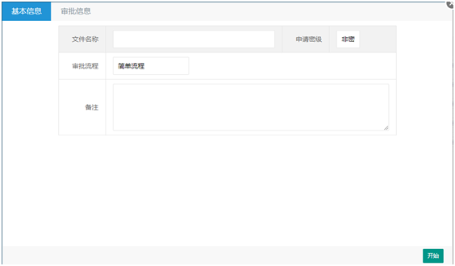

概述
目前，属于.NET平台下研发的工作流组件真是太少，可供选择不多，官方的我们之前也采用过，没有用好，到处是坑，而且还没有提供在线的流程设计器，使用起来极其不方便。市面上免费开源工作流管理组件又很少，基本都是属于要收取一定的费用。真正免费的又不是很好用，收费的又太高，所以笔者闭门造轮子，打造一款基于.NET平台免费开源工作流管理组件，为开源尽点绵薄之力，并且后续在时间允许范围内会提供全方位的技术支持，所以你不用担心，无人维护。
适用场景
Smartflow-Sharp工作流组件是一款更加倾向于程序员的快速开发组件，通过该组件快速构建企业信息化业务流程管理系统，以适应企业的管理流程的频繁变更，做出快速响应，以满足当前企业快速发展管理的需要。适用于传统行业文件流转、送审等审批使用场景。
功能划分
基于.NET平台，研发Smartflow-Sharp工作流组件，该工作流组件包含工作流引擎、工作流流程设计器，支持流程在线设计。工作流引擎负责提供对流程的解析，并驱动流程的流转，是工作流组件核心部件。流程设计器是基于SVG研发，支持所有主流浏览器，IE浏览器只支持IE9以上的版本。为了便于后续扩展，支持其他的数据库的访问，笔者经过慎重考虑采用Dapper组件。Dapper组件对原生SQL语句支持比较友好，且支持所有主流数据库系统访问。目前，默认只支持 MSSQLSERVER数据库，若想使用其他的数据库，后续我会在合适的时间提供相关建库脚本。
准备
为了确保示例的正常运行，我们先需要安装示例所需的运行环境。
a) MSSQLSERVE2008；
b) Asp.net framework4.0 以上的框架（含4.0）；
c) Asp.net MVC4.0；
d) IIS7.5
e) VS2017开发工具。
启动
下载工作流组件源码压缩包，然后解压打开项目文件夹，在MSSQLSERVER2008中按顺序执行SQL文件夹下SQL脚本，执行完成后会创建flow、bussiness两个数据库。在VS中打开项目解决方案，找到示例项目中的配置文件，调整访问数据库连接字符串，然后在VS开发工具中启动项目，启动完成后，若能浏览到登录界面表示部署成功。

集成
工作流组件在与业务系统融合过程中，有些必须的信息是需要由业务系统提供支撑如用户、组织机构、角色等基础信息。工作流组件通过开放集成式接口的与这些基础信息进行绑定，从而与业务系统建立关联关系。
工作流组件集成到业务系统中，我将其分为数据库、业务流程引擎、流程设计器、审批页面四个部分，逐一阐述四个部分的集成步骤。
数据库
flow库是工作流组件的基础数据库，流程节点、实例都是存储在这里。在将工作流组件集成到业务系统中，必须将flow库整体拷贝过去。找到flow库中t_config表，然后增加字记录（如下图）。流程分支节点动态条件判定是基于此表的配置。
我们流程中有些信息是存储到库（bussiness）中，并没有将所有的信息设计存储到流程基础库中，所以用户需要注意进行针对性调整。具体涉及到待办信息（t_pending）、审批信息(t_record)、流程结构表(t_structure)统统都是存储在示例库中。
业务流程引擎
将Smartflow组件引入到业务系统后，同时需要调整配置工作流基础数据库连接地址，以便于流程引擎将业务流程文件解析存储到数据库。在示例中有演示如何使用的工作流引擎的代码，用户可以参照示例中提供的代码，根据实际业务系统的情况做具体调整。
流程设计器
流程设计器是提供定义业务流程的工具，通过图形化组合方式模拟现实中业务流程。在与业务系统集成中需拷贝Content/design、Views/WorkflowDesign、Controllers文件夹中文件。

审批页面
为了方便用户快速与业务系统集成，Smartflow-Sharp工作流组件中提供统一的审批框架页面（Views/Shared/AuditFrame.cshtml），以供用户使用。审批框架页面是以将表单页面嵌入的形式进行集成，用户只需要传递表单的URL，表单中提前定义好相关保存接口，以供审批框架页面调用，在后续的审批动作都是由审批框架页面自动完成。

流程设计工具
在流程设计工具中我们通过定义不同的图形方式，来模拟现实中业务环节，通过连线的方式表示业务环节的走向，最终形成一个完整的业务流程。 目前流程设计工具支持上下左右连线，且支持折线连接。
定义元素
在流程设计工具中我们通过定义不同的图形方式，来模拟现实中业务环节，通过连线的方式表示业务环节的走向，最终形成一个完整的业务流程。 目前流程设计工具支持上下左右连线，且支持折线连接。
元素属性设置
a) 连线：设置业务流程走向名称；
b) 普通节点：设置业务环节节点的名称，以及业务环节审批人的信息；支持按组设置节点审批人；
c) 分支节点：提供基于自定义条件设定，根据条件动态判定表单流转方向。
流程引擎
正在编写中。
FQA问题汇总
1、VS2017 打开解决方案编译不通过
答：请在NuGet的控制台里执行如下命令：
update-package -project Smartflow.Web.Mvc -reinstall
未来
作者会对Smartflow-Sharp工作流组件，一直负责到底。未来，我会对工作流管理组件增加更多实用性的功能，以便你能将工作流组件更加快速的融入到业务系统中。期望，能打造成符合中国特色工作流管理平台，造福更多企业和开发人员。如果你觉得能帮助到你，欢迎帮忙推荐。 若需要定制开发或项目，也可以与我联系，我很愿意，花点时间来挣取零花钱。
技术支持/商务合作：237552006@qq.com。